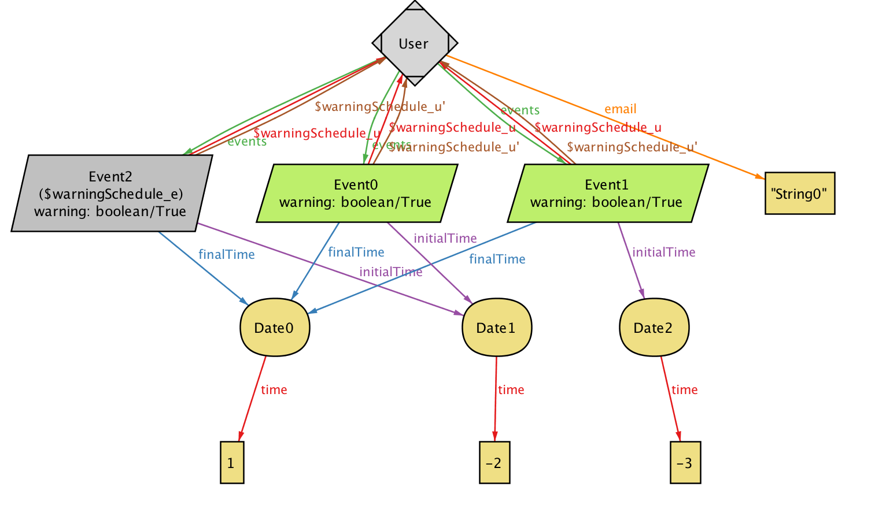

## Software Engineering Project - RASD ### Presentation Marco Prosdocimi - Enrico Ruggiano - Giacomo Vercesi <img src="assets/Logo.png" style="max-width: 70%"/> --- # Introduction -- *Travlendar+ is an appointment management system capable of efficently scheduling a user's calendar. Thanks to this application it is possible to calculate in advance the estimated time to reach a meeting point based on the transportation choices made my the user.* --- # Travlendar+ Goals -- The main functions: * **Calendar App** manager * **Maps Geolocalization App** * **Customizable Personal User page** and preferences --- ## Calendar App manager * Let the User submit Events * Notification functions <img src="assets/Enterprise01.jpg" style="max-width: 60%"/> -- <img src="assets/Calendar.png" style="max-width: 80%"/> --- ## Maps Geolocalization App * Calculate a list of shortest path for destination and based on User preferences * Warning message if User may arrive late or it's overlaps other mitting. <img src="assets/Enterprise03.jpg" style="max-width: 60%"/> -- <img src="assets/Routes.png" style="max-width: 45%"/> --- ## Personal Preference manager * Let User update personal informations. * Let User manage Vehicle preferences. <img src="assets/Enterprise02.jpg" style="max-width: 50%"/> -- <img src="assets/Preference01.png" style="max-width: 45%"/> <img src="assets/Preference02.png" style="max-width: 45%"/> --- # Requirements -- * The App must store an "Event" when the User specifies a "Starting Location", a "Meeting Location" a date and the time. * The App must have an 'Alarm System' which warns the User in specific cases. -- * The App with the support of external API can calculate an Extimation time of arrival for a specified 'Best Route'. * Before subitting the 'Event', the App must check if the time of the 'Event' and the 'Extimation' time of Arrival of the corrisponding 'Best Route' overlap with other 'Event' time start. -- * The App must verify if the new informations are valid <img src="assets/Businessmen.jpg" style="max-width: 65%"/> --- # Assumptions -- ## Algorithm calculation * Statistics to determine user walking pace. * No ground impacts that could slow down the walk. -- ## external Api * Access informations public transportations timetables. * Positions and availability of Car and Bike sharing. * Redirect the User's navigation on secure Payments service --- # Bounduaries -- ## User characteristics * Businessmen * Travelers * City lovers <img src="assets/CityLover.jpg" style="max-width: 25%"> <img src="assets/Tourist.jpg" style="max-width: 45%"> -- ## Standards Compliance - JavaEE for the server backend - utilize a JSON REST API for communication between the backend and frontend - Google Maps library for the 'Virtual Map' creation -- ## Hardware Limitations - Android or iOS operating system - Semi-continuous internet access (3G/4G/WiFi) - GPS --- # Alloy -- <img src="assets/GeneratedWorld.png" style="max-width: 70%"/> --  --- # Use Case Meaningfull -- <img src="assets/UC1.2.png"/> -- <img src="assets/UC2.png"/> --- # Thanks for the Attention -- ## References * Travlendar+ RASD document *The pictures used for the presentation and UI are desiged or partially designed by yanalya / Freepik according with the FreeLicence*. *For more informations visit* http://www.freepik.com/terms_of_use